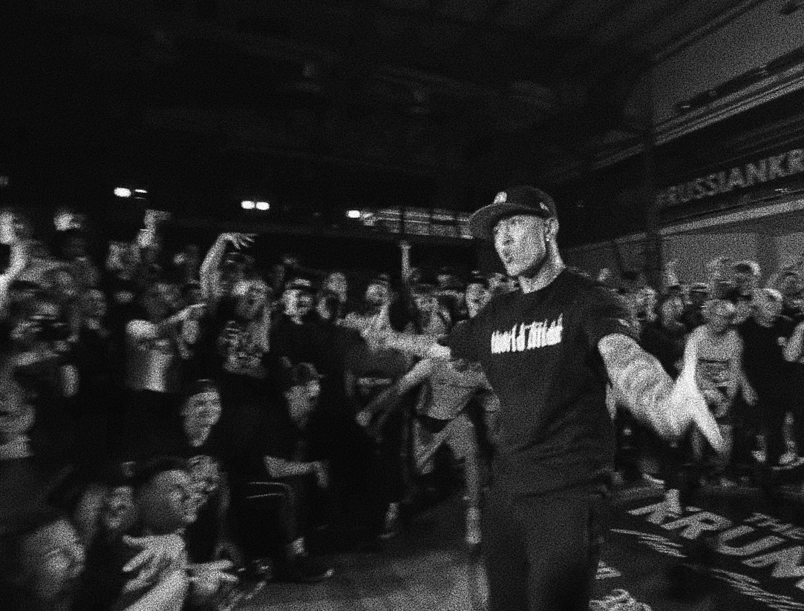

Уличные стили
- Hip-hop (Хип-хоп) Hip-hop – одно из ведущих направлений современных танцев, порожденное культурой большого города. Основными элементами техники этого стиля являются «кач» тела, прыжки, падения, вращения и легкие акробатические движения. Весьма динамичный танцевальный стиль, сочетающий в себе акцентирование отдельных частей тела (головы, рук и ног) и элементы движений из повседневной жизни.
- House (Хаус) House — это фристайл-уличный танец и социальный танец, который уходит корнями в андеграундную хаус-музыку Чикаго и Нью-Йорка. Стиль появился в эпоху диско 70-80-х годов 20 века. Хаус построен, прежде всего, на полном контроле своего тела и энергии. У этого стиля есть особенность: быстрые движения ног, при которых корпус остается плавным, на вид даже расслабленным, держась при этом в постоянном внутреннем напряжении.
- Jacking — работа корпусом
- Footwork — работа ног
- Stomping — прыжковые элементы
- Lofting — работа в партере
- Stocking — взаимодействие с партнером
- Popping (Паппинг) Poppig — стиль танца, основанный на сокращении мышц, создающий эффект резкого вздрагивания в теле танцора — пап. Его называют танцем иллюзии, так как многие его элементы создают впечатление нереальности происходящего.
- Waving — создание волнообразных движений ногами, руками, шеей, корпусом
- Glinding — разновидности "лунной походки"
- King Tut — соблюдение прямых углов в ладонях, предплечьях и плечах
- Finger Tut — разнообразные движения с использованием пальцев на руках
- Strobbing — резкая остановка на несколько секунд по окончании каждого выполненного движения
- Slow Motion — плавные, непрерывные и замедленные движения
- Puppet — копирование движений марионеток
- Krump (Крамп)  Krump — бурный и гиперскоростной танец, очень сильно напоминающий настоящую драку. Самое главное в исполнении крампа – соответствие мироощущению исполнителя и его характеру. Уникальность крампа заключена в особенности его движений — крампер танцует отрывисто, быстро двигается, часто прыгает, и вступает в физический контакт с партнерами по танцевальной «драке». Танцоры, которые начали заниматься крампингом, видели в танце средство избежать бандитской жизни и "выразить грубые эмоции мощным, но ненасильственным способом".
- Locking (Локинг)
- Breakdance (Брейк-данс) Breakdance – зрелищный танец, сочетающий в себе удивительную пластику и сложность акробатических трюков. Это спортивный стиль уличных танцев, созданный в США афроамериканской и пуэрто-риканской молодёжью в начале 1970-х годов. В 70-х исходными терминами для танца были «брейкинг» и «би-боинг», а практикующих этот танец называли «би-бой», «би-гёрл» или «брейкер». Для его исполнения необходимы хорошая координация, физическая выносливость, чувство ритма и гибкость. В движениях, включающих импровизационные переходы от оригинальной пластики к акробатическим элементам с вращениями на голове, прыжками на руках и оборотами вокруг своего тела, танцор не только демонстрирует мастерство, но и выплескивает свои эмоции и энергию.
Данное направление возникло в Южном Бронксе в семидесятых годах двадцатого столетия. Оно быстро приобрело популярность и заняло собственную нишу в молодежной культуре многих стран мира. Это не просто музыка, а стиль жизни со своим танцем, одеждой и языком.
Составляющие стиля:
Составляющие стиля:
 Locking — один из самых позитивных фанковых стилей танца, характеризующийся шуточной и даже комичной манерой
исполнения.
Название танец получил потому, что включает позиции, называемые «замками» (locks).
Помимо особой манеры исполнения, локинг характеризуется наличием базовых движений, четко
закрепленных традицией и исполняющихся всеми танцорами строго единообразно. Это быстрые «запирающие»
(locking) и «указывающие» (pointing) движения, наряду с хлопками руками (slaps, claps, giving five)
и шпагатами (splits).
Locking — один из самых позитивных фанковых стилей танца, характеризующийся шуточной и даже комичной манерой
исполнения.
Название танец получил потому, что включает позиции, называемые «замками» (locks).
Помимо особой манеры исполнения, локинг характеризуется наличием базовых движений, четко
закрепленных традицией и исполняющихся всеми танцорами строго единообразно. Это быстрые «запирающие»
(locking) и «указывающие» (pointing) движения, наряду с хлопками руками (slaps, claps, giving five)
и шпагатами (splits).